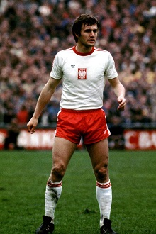

Włodzimierz Lubański (ur. 28.02.1947 r., 75/48) – uczestnik turniejów finałowych
mistrzostw świata (1978) i Igrzysk Olimpijskich (1972), złoty medalista
Igrzysk Olimpijskich (1972). Najmłodszy debiutant w historii reprezentacji Polski,
w meczu z Norwegią w Szczecinie (1963, 9:0) strzelił gola mając wtedy 16 lat i 188 dni.
W 2003 roku uznany za najlepszego polskiego piłkarza 50-lecia UEFA.
Jest laureatem nagrody Fair Play UNESCO – w meczu z Danią w 1977 roku w Chorzowie,
w dogodnej sytuacji zrezygnował ze strzału i przeskoczył nad bramkarzem rywali,
aby nie narazić go na kontuzję. Członek Klubu Wybitnego Reprezentanta,
drugi najskuteczniejszy strzelec w historii kadry narodowej.
Włodzimierz Leonard Lubański (ur. 28 lutego 1947 w Gliwicach) – polski piłkarz występujący na pozycji środkowego napastnika, reprezentant Polski, olimpijczyk, trener.
Wychowanek Sośnicy Gliwice, następnie reprezentował barwy GKS-u Gliwice,
Górnika Zabrze (siedmiokrotny mistrz Polski, sześciokrotny zdobywca Pucharu Polski),
KSC Lokeren, Valenciennes FC, Stade Quimper oraz KRC Mechelen. Z reprezentacją Polski
zdobył mistrzostwo olimpijskie (1972) oraz uczestniczył w mistrzostwach świata 1978.
Najmłodszy zawodnik i strzelec reprezentacji Polski (16 lat i 188 dni), a także drugi
(48 bramek) spośród najskuteczniejszych strzelców w historii narodowej kadry.
Zasłużony Mistrz Sportu, członek Klubu Wybitnego Reprezentanta.
Włodzimierz Lubański jest żonaty z Grażyną Lubańską, z którą ma dwójkę dzieci:
syna Michała i córkę Małgorzatę. Jest kolekcjonerem win i miłośnikiem malarstwa
polskiego, zwłaszcza Piotra Michałowskiego.
Górnik Zabrze
Mistrzostwo Polski: 1963, 1964, 1965, 1966, 1967, 1971, 1972
Wicemistrzostwo Polski: 1969, 1974
3. miejsce w ekstraklasie: 1968, 1970
Puchar Polski: 1965, 1968, 1969, 1970, 1971, 1972
Finał Pucharu Zdobywców Pucharów: 1970
Ćwierćfinał Pucharu Europy: 1968
Ćwierćfinał Pucharu Zdobywców Pucharów: 1971
KSC Lokeren
Wicemistrzostwo Belgii: 1981
Finał Pucharu Belgii: 1981
Ćwierćfinał Pucharu UEFA: 1981
Reprezentacyjne
Mistrzostwo olimpijskie: 1972
Indywidualne
Król strzelców ekstraklasy: 1966, 1967, 1968, 1969
Król strzelców Pucharu Zdobywców Pucharów: 1970, 1971
Król strzelców Deuxième Division: 1983
Piłkarz Roku w plebiscycie katowickiego "Sportu": 1967, 1970
Złoty But w plebiscycie katowickiego "Sportu": 1972
Dżentelmen Sportu: 1972, 1977
Nagroda fair play UNESCO: 1978
Najlepszy polski piłkarz 50-lecia UEFA: 2003
Lewy napastnik w jedenastce stulecia PZPN: 2019
Rekordy
Najmłodszy debiutant w reprezentacji Polski: 16 lat 188 dni
Najmłodszy strzelec w reprezentacji Polski: 16 lat 188 dni
Najskuteczniejszy strzelec Górnika Zabrze: 228 goli
Włodzimierz Lubański w latach 1961–1963 grał w juniorskiej reprezentacji Polski.
W dniu 4 września 1963 roku na Stadionie Miejskim w Szczecinie wraz z klubowym kolegą,
Zygfrydem Szołtysikiem zadebiutował w seniorskiej reprezentacji Polski w wygranym 9:0
meczu towarzyskim z reprezentacją Norwegii, której w 67. minucie strzelił swoją
pierwszą bramkę w reprezentacji Polski (zanim w 71. minucie został zmieniony przez
Józefa Gałeczkę), dzięki czemu w wieku 16 lat i 188 dni został najmłodszym debiutantem
i strzelcem reprezentacji Polski w historii.
Dnia 27 maja 1971 roku w Moskwie wystąpił w meczu pożegnalnym słynnego radzieckiego
bramkarza – Lwa Jaszyna w drużynie Gwiazd FIFA wraz z Zygmuntem Anczokiem, oraz
w meczu Europa-Ameryka Południowa.
W 1972 roku został powołany przez selekcjonera Kazimierza Górskiego na turniej
olimpijski 1972 w Monachium, podczas którego rozegrał 6 meczów i strzelił 2 bramki,
a reprezentacja Polski po wygranej 2:1 w meczu finałowym z obrońcami tytułu –
reprezentacją Węgier, po raz pierwszy w historii została mistrzem olimpijskim.
Dnia 6 czerwca 1973 roku podczas wygranego 2:0 meczu eliminacyjnego mistrzostw świata
1974 na Stadionie Śląskim w Chorzowie, w 47. minucie ustalił wynik meczu, a siedem
minut później został sfaulowany przez Roya McFarlanda, odnosząc kontuzję więzadła
krzyżowego, wykluczającą go z gry na dwa lata (w tym z mistrzostw świata 1974 na
których reprezentacja Polski zajęła trzecie miejsce), jednak po wielu latach sam
Lubański w swoich wspomnieniach przyznał, że kontuzja nie była wynikiem faulu
Roya McFarlanda, lecz wcześniejszego urazu powstałego z powodu nieodpowiedniego
przygotowania do meczu. W reprezentacji Polski ponownie zagrał za kadencji
selekcjonera Jacka Gmocha dnia 31 października 1976 roku w meczu eliminacyjnym
mistrzostw świata 1978, w którym reprezentacja Polski na Stadionie Dziesięciolecia
w Warszawie wygrała 5:0 z reprezentacją Cypru. W dniu 21 września 1977 roku na
Stadionie Śląskim w Chorzowie podczas wygranego 4:1 meczu eliminacyjnym mistrzostw
świata 1978 z reprezentacją Danii, w 38. minucie mając szansę na zdobycie bramki,
zrezygnował ze strzału i przeskoczył nad bramkarzem rywali Perem Poulsenem,
aby nie narazić go na kontuzję, a strzał dokończył Grzegorz Lato, podwyższając wynik
na 2:0. Za to zachowanie Lubański otrzymał w 1978 roku nagrodę Fair play UNESCO oraz
w tym samym roku został powołany przez selekcjonera Jacka Gmocha na mistrzostwa
świata 1978 w Argentynie, na których reprezentacja Polski zakończyła udział w
drugiej rundzie, a Lubański rozegrał 5 meczów i nie strzelił bramki, zaś wkrótce po
zakończeniu turnieju odszedł z reprezentacji Polski, z którą po raz ostatni wystąpił
w 1980 r. w zremisowanym 1:1 towarzyskim spotkaniu z Czechosłowacją na Stadionie
Śląskim w Chorzowie, strzelając swojego 48. gola, co było rekordem kraju do
5 października 2017, kiedy pobił go Robert Lewandowski. (W czasie, gdy mecz był
rozgrywany, bramka ta uznawana była za pięćdziesiątą, ale potem w wyniku skreślenia
z listy oficjalnych meczów reprezentacji niektórych spotkań z reprezentacjami
olimpijskimi, liczbę tę zweryfikowano.) Łącznie w latach 1963–1980 Włodzimierz
Lubański w reprezentacji Polski rozegrał 75 meczów, w których strzelił 48 goli.